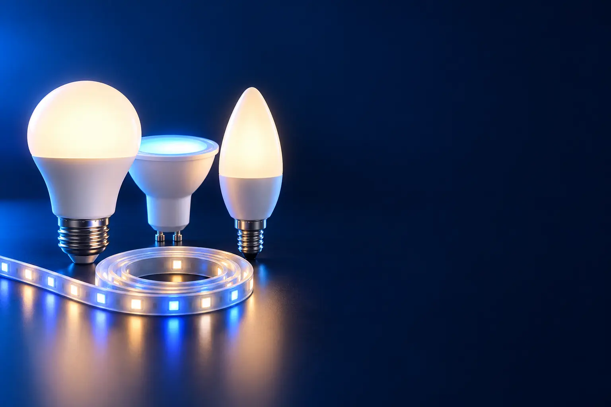

LÂMPADA INTELIGENTE
Melhor lâmpada inteligente custo-benefício
Troca no bocal e pronto: liga pelo celular, pela voz e muda de cor. O primeiro passo da casa inteligente.

Melhor custo-benefício em lâmpada inteligenteTP-Link Tapo L530E
CURADORIA TECHAPROVADO · 2026
Dá para começar com uma lâmpada no bocal ou trocar a luz do teto. Separamos 14 produtos em 3 perfis, do custo-benefício ao top de linha, e dizemos para quem cada um vale a pena.

NOSSA LEITURA
Uma lâmpada na sala ou no quarto já mostra se a casa inteligente é para você. Escolha uma marca e mantenha: tudo no mesmo aplicativo é o que faz a rotina funcionar.
COMECE POR AQUI
LÂMPADA INTELIGENTE
Troca no bocal e pronto: liga pelo celular, pela voz e muda de cor. O primeiro passo da casa inteligente.
FITA LED
Luz indireta atrás da TV, da cama ou da prateleira, com milhões de cores pelo celular.

PAINEL E LUMINÁRIA
Para trocar a luz do teto ou ter uma luminária que acende com a voz.

A FICHA, TRADUZIDA
01 - WI-FI OU CENTRAL
A maioria das lâmpadas inteligentes conecta direto no Wi-Fi da casa: você instala o app e pronto, sem aparelho extra. Sistemas como o Philips Hue usam uma central (bridge) que conversa com as lâmpadas por outro sinal (Zigbee).
Para até umas 10 luzes, o Wi-Fi resolve bem. Com muitas, a central deixa tudo mais rápido, não sobrecarrega o roteador e libera automações mais completas.
Quase todas as lâmpadas Wi-Fi só funcionam na rede de 2,4 GHz. Confira se o seu roteador mantém essa rede ligada.
02 - LÚMENS E POTÊNCIA
Watts (W) dizem quanto a lâmpada gasta; lúmens (lm) dizem quanta luz ela dá. Uma lâmpada inteligente de 806 lúmens ilumina como uma incandescente antiga de 60 W, gastando cerca de 9 W.
Para um quarto, 800 lúmens bastam. Para sala grande, use mais de uma lâmpada ou um painel de teto, que passa de 1.400 lúmens.
Fitas de LED e spots têm poucos lúmens: são luz de decoração ou de destaque, não a luz principal.
03 - BRANCO E CORES
RGB é a capacidade de fazer cores (16 milhões, nas propagandas). Branco ajustável muda o tom do branco: quente (amarelado, 2.700 a 3.000 K) para relaxar e frio (azulado, 6.500 K) para trabalhar.
No dia a dia, o branco ajustável é o recurso mais usado: luz quente à noite e fria para ler ou cozinhar. As cores são ótimas para festa, filme e jogo.
Prefira modelos que tenham os dois. RGB sem branco de verdade faz uma luz branca "esverdeada" ou fraca.
04 - APP E ASSISTENTES
Cada marca tem seu aplicativo (Positivo, Tapo, Elgin, Tramontina, Hue). Quase todas funcionam com Alexa e Google, então você pode misturar marcas e controlar tudo pela voz.
Mesmo assim, ficar numa marca facilita: rotinas, cenas e automações funcionam melhor dentro do mesmo app, junto com tomadas e câmeras da marca.
Para controlar fora de casa e criar rotinas por horário, o app basta. Para rotinas por voz, você precisa de um Echo ou de um Google Nest.
A CURADORIA EM DETALHE
14 modelos da pesquisa
PERFIL · 5 MODELOS, DA ENTRADA AO TOP DE LINHA
A lâmpada inteligente é o jeito mais simples de começar: você rosqueia no bocal comum, configura no app e passa a ligar, desligar, dimerizar e mudar de cor pelo celular ou pela Alexa. A escada vai das Wi-Fi de entrada ao sistema Philips Hue.

POR DENTRO DA ESCOLHA
A lâmpada inteligente mais barata da seleção: 10 W, cores RGB e controle pelo app Elgin Smart ou pela Alexa e pelo Google.
Cumpre o básico: ligar, desligar, dimerizar e mudar de cor.
| Potência | 10 W |
|---|---|
| Cores | RGB |
| Conexão | Wi-Fi 2,4 GHz |
| Assistentes | Alexa e Google |
| App | Elgin Smart |
Fonte: ficha e descrição do anúncio, conferidas em 02/11/2026. Dados informados pelo fabricante.
LÂMPADA · CUSTO-BENEFÍCIO 2 de 5
Melhor custo-benefício em lâmpada inteligente
16 milhões de cores · 806 lm · sem hub
Ver preço na AmazonPOR DENTRO DA ESCOLHA
Brilho de 806 lúmens (como uma lâmpada comum de 60 W) com só 8,7 W, 16 milhões de cores, ajuste de temperatura do branco e controle pelo app Tapo, o mesmo das câmeras e tomadas da marca. Não precisa de central.
O app Tapo é dos mais simples e estáveis.
| Brilho | 806 lúmens |
|---|---|
| Consumo | 8,7 W |
| Cores | 16 milhões + branco ajustável |
| Conexão | Wi-Fi 2,4 GHz, sem hub |
| App | Tapo |
Fonte: ficha e descrição do anúncio, conferidas em 02/11/2026. Dados informados pelo fabricante.

LÂMPADA · INTERMEDIÁRIO 3 de 5
Wi-Fi + Bluetooth · 16 milhões de cores
Ver preço na AmazonPOR DENTRO DA ESCOLHA
Funciona por Wi-Fi e também por Bluetooth, então dá para controlar pelo celular por perto mesmo quando a internet cai. 10 W, 16 milhões de cores e rotinas com Alexa e Google.
O Bluetooth é o diferencial em relação às outras da escada.
| Potência | 10 W |
|---|---|
| Conexão | Wi-Fi + Bluetooth |
| Cores | 16 milhões |
| Assistentes | Alexa e Google |
| Voltagem | Bivolt |
Fonte: ficha e descrição do anúncio, conferidas em 02/11/2026. Dados informados pelo fabricante.

LÂMPADA · AVANÇADO 4 de 5
Branco quente e frio + RGB · 806 lm
Ver preço na AmazonPOR DENTRO DA ESCOLHA
9 W, 806 lúmens, branco quente e frio e 16 milhões de cores, com o app Positivo Casa Inteligente e Alexa e Google.
O app da Positivo também controla tomadas, sensores e câmeras da marca.
| Potência | 9 W |
|---|---|
| Brilho | 806 lúmens |
| Cores | Branco quente/frio + RGB |
| Assistentes | Alexa e Google |
| Voltagem | Bivolt |
Fonte: ficha e descrição do anúncio, conferidas em 02/11/2026. Dados informados pelo fabricante.

LÂMPADA · TOP DE LINHA 5 de 5
Top de linha em iluminação inteligente
Sistema Hue · central (Bridge) · automações
Ver preço na AmazonPOR DENTRO DA ESCOLHA
O kit de entrada no sistema Philips Hue, com lâmpadas e a central Hue Bridge, que deixa a casa mais rápida e estável que o Wi-Fi e libera automações, sensores e controle de fora de casa.
O Hue é o sistema mais completo e confiável do mercado. Faz sentido para quem vai ter muitas luzes; para duas ou três, as Wi-Fi resolvem.
| Sistema | Philips Hue |
|---|---|
| Central | Hue Bridge incluída |
| Assistentes | Alexa, Google e Apple Home |
| Extras | Automações, sensores, controle remoto |
Fonte: ficha e descrição do anúncio, conferidas em 02/11/2026. Dados informados pelo fabricante.
PERFIL · 4 MODELOS, DA ENTRADA AO TOP DE LINHA
Fitas de LED com Wi-Fi fazem luz indireta: atrás da TV, embaixo da cama, na sanca ou na prateleira. Colam com adesivo e muitas podem ser cortadas no tamanho certo. A oferta confiável na loja é menor que a de lâmpadas.

POR DENTRO DA ESCOLHA
Cinco metros com 90 LEDs por metro, para luz mais uniforme, 16 milhões de cores e branco neutro (RGBCCT), com app AGL Home e comando de voz.
A fita inteligente mais barata que passa nos filtros, com densidade de LEDs boa para o preço.
| Comprimento | 5 m |
|---|---|
| LEDs | 90 por metro |
| Cores | RGBCCT |
| App | AGL Home |
Fonte: ficha e descrição do anúncio, conferidas em 02/11/2026. Dados informados pelo fabricante.
FITA LED · CUSTO-BENEFÍCIO 2 de 4
Melhor custo-benefício em fita LED
Branco quente e frio + RGB · 14 W
Ver preço na AmazonPOR DENTRO DA ESCOLHA
Fita de 3 metros com branco ajustável de 3.000 K a 6.500 K e 16 milhões de cores, no mesmo app das lâmpadas Positivo. Instalação com adesivo.
O branco quente e frio faz a fita servir de luz de leitura, não só de decoração.
| Comprimento | 3 m |
|---|---|
| Potência | 14 W |
| Branco | 3.000 a 6.500 K |
| Cores | 16 milhões |
| Voltagem | Bivolt |
Fonte: ficha e descrição do anúncio, conferidas em 02/11/2026. Dados informados pelo fabricante.

FITA LED · ALTERNATIVA 3 de 4
Outro caminho: RGBIC
Várias cores ao mesmo tempo · sincroniza com música
Ver preço na AmazonPOR DENTRO DA ESCOLHA
Com a tecnologia RGBIC, cada trecho da fita pode ter uma cor diferente ao mesmo tempo, criando degradês e efeitos que acompanham a música.
Não é um degrau acima da Positivo, é outro tipo de efeito. Funciona com Alexa e Google.
| Comprimento | 5 m |
|---|---|
| Tecnologia | RGBIC (cores por segmento) |
| Extras | Sincroniza com música |
| Assistentes | Alexa e Google |
Fonte: ficha e descrição do anúncio, conferidas em 02/11/2026. Dados informados pelo fabricante.

FITA LED · TOP DE LINHA 4 de 4
Top de linha em fita LED
16 milhões de cores · adesivo 3M · app Tapo
Ver preço na AmazonPOR DENTRO DA ESCOLHA
Fita de 5 metros com 16 milhões de cores, que pode ser cortada no tamanho e fixa com adesivo 3M. É controlada pelo app Tapo, junto com lâmpadas, câmeras e tomadas da marca.
Paga-se pela marca e pelo app.
| Comprimento | 5 m, cortável |
|---|---|
| Cores | 16 milhões |
| Fixação | Adesivo 3M |
| App | Tapo |
Fonte: ficha e descrição do anúncio, conferidas em 02/11/2026. Dados informados pelo fabricante.
PERFIL · 5 MODELOS, DA ENTRADA AO TOP DE LINHA
Para quem quer a luz principal do cômodo inteligente, não só um abajur: painéis e plafons de embutir ou sobrepor, que substituem a luminária do teto, e luminárias de mesa com cores. Painéis de teto exigem instalação elétrica.
PAINEL · CUSTO-BENEFÍCIO 1 de 5
Melhor custo-benefício em painel inteligente
1.440 lm · branco quente a frio · Alexa
Ver preço na AmazonPOR DENTRO DA ESCOLHA
Painel ultrafino de embutir no forro, com 18 W e 1.440 lúmens, dimerizável e com branco ajustável de 3.000 a 6.500 K. Controle pelo app Elgin ou pela voz.
Luz principal inteligente pelo preço de duas lâmpadas.
| Potência | 18 W |
|---|---|
| Brilho | 1.440 lúmens |
| Branco | 3.000 a 6.500 K |
| Instalação | Embutir |
| Voltagem | Bivolt |
Fonte: ficha e descrição do anúncio, conferidas em 02/11/2026. Dados informados pelo fabricante.

PAINEL · ALTERNATIVA 2 de 5
Outro caminho: spot com cores
Spot quadrado · cores · 350 lm
Ver preço na AmazonPOR DENTRO DA ESCOLHA
Spot pequeno com 5 W, cores RGB e branco ajustável, que não esquenta o ambiente. Bom para luz de destaque em quadros, nichos e corredores.
Não substitui o painel: é luz de efeito. Combina bem com ele.
| Potência | 5 W |
|---|---|
| Brilho | 350 lúmens |
| Cores | RGB + branco 3.000 a 6.500 K |
| Formato | Spot quadrado |
Fonte: ficha e descrição do anúncio, conferidas em 02/11/2026. Dados informados pelo fabricante.

PAINEL · INTERMEDIÁRIO 3 de 5
Wi-Fi + Bluetooth · sensor de som · geolocalização
Ver preço na AmazonPOR DENTRO DA ESCOLHA
Plafon quadrado de embutir com 18 W, Wi-Fi e Bluetooth, ajuste de intensidade e cor, sensor de som e função de geolocalização (acende quando você chega).
O Bluetooth e a geolocalização são o que a Elgin não tem.
| Potência | 18 W |
|---|---|
| Conexão | Wi-Fi + Bluetooth |
| Extras | Sensor de som, geolocalização |
| Instalação | Embutir |
Fonte: ficha e descrição do anúncio, conferidas em 02/11/2026. Dados informados pelo fabricante.

PAINEL · AVANÇADO 4 de 5
Liga na tomada · RGB · 500 lm
Ver preço na AmazonPOR DENTRO DA ESCOLHA
Luminária de mesa que só precisa de tomada: 7 W, 16 milhões de cores e branco, controlada pelo app Positivo e pela Alexa e pelo Google.
É a forma mais fácil de ter luz inteligente sem instalar nada.
| Potência | 7 W |
|---|---|
| Cores | 16 milhões + branco |
| Instalação | Tomada |
| Assistentes | Alexa e Google |
Fonte: ficha e descrição do anúncio, conferidas em 02/11/2026. Dados informados pelo fabricante.

PAINEL · TOP DE LINHA 5 de 5
Top de linha decorativo
Painéis hexagonais RGBIC · sincroniza com música
Ver preço na AmazonPOR DENTRO DA ESCOLHA
Painéis hexagonais de luz que você monta na parede no desenho que quiser. Cada borda tem uma cor (RGBIC) e há 6 modos de sincronização com música.
É a peça de efeito mais completa da seleção.
| Formato | Painéis hexagonais |
|---|---|
| Cores | RGBIC por borda |
| Extras | 6 modos de música |
| App | Govee |
Fonte: ficha e descrição do anúncio, conferidas em 02/11/2026. Dados informados pelo fabricante.
Nenhum modelo encontrado. Tente outro termo ou volte para Todos.
LADO A LADO
| Modelo | Perfil | Posição | Brilho | Destaque |
|---|---|---|---|---|
| Elgin Smart Color 10 W | Lâmpada | Entrada | 10 W | RGB · Wi-Fi · Alexa e Google |
| TP-Link Tapo L530E | Lâmpada | Custo-benefício | 806 lúmens | 16 milhões de cores · 806 lm · sem hub |
| Tramontina Smart LED 10 W | Lâmpada | Intermediário | 10 W | Wi-Fi + Bluetooth · 16 milhões de cores |
| Positivo Smart Lâmpada Wi-Fi 9 W | Lâmpada | Avançado | 806 lúmens | Branco quente e frio + RGB · 806 lm |
| Philips Hue Starter Kit | Lâmpada | Top de linha | Philips Hue | Sistema Hue · central (Bridge) · automações |
| Fita LED AGL Wi-Fi 5 m | Fita LED | Entrada | 5 m | RGBCCT · 90 LEDs/m · app e voz |
| Positivo Smart Fita LED 2ª geração 3 m | Fita LED | Custo-benefício | 14 W | Branco quente e frio + RGB · 14 W |
| Govee RGBIC 5 m | Fita LED | Alternativa | 5 m | Várias cores ao mesmo tempo · sincroniza com música |
| TP-Link Tapo Fita LED Wi-Fi 5 m | Fita LED | Top de linha | 5 m, cortável | 16 milhões de cores · adesivo 3M · app Tapo |
| Elgin Painel Smart de Embutir Redondo 18 W | Painel | Custo-benefício | 1.440 lúmens | 1.440 lm · branco quente a frio · Alexa |
| Elgin Ecospot Smart 5 W RGB | Painel | Alternativa | 350 lúmens | Spot quadrado · cores · 350 lm |
| Tramontina Plafon Smart 18 W | Painel | Intermediário | 18 W | Wi-Fi + Bluetooth · sensor de som · geolocalização |
| Positivo Smart Luminária de Mesa (2ª geração) | Painel | Avançado | 7 W | Liga na tomada · RGB · 500 lm |
| Govee Hexa Glide (painéis de parede) | Painel | Top de linha | Painéis hexagonais RGBIC · sincroniza com música |
CONSIDERAÇÕES FINAIS
O topo (Philips Hue Starter Kit e os painéis Govee) faz sentido para quem vai automatizar a casa inteira ou quer um efeito decorativo. Para começar, uma lâmpada Wi-Fi já mostra o que a casa inteligente faz.
A TP-Link Tapo L530E, pelo brilho, pelas cores e pelo app simples. A Positivo Smart também é ótima escolha.
A maioria não: conecta direto no Wi-Fi. O Philips Hue usa central para ficar mais estável e liberar automações.
Todas desta seleção funcionam com Alexa e com o Google Assistente.
RGB faz cores. Branco ajustável muda o tom do branco, do quente ao frio. No dia a dia, o branco ajustável é o mais útil.
Porque ele muda várias vezes por dia. Usamos o preço só para montar a escada de cada perfil; o botão leva ao valor atualizado na loja.
TRANSPARÊNCIA EDITORIAL
Separamos os perfis pelo tipo de luz: lâmpada, fita LED e painel ou luminária. Cada modelo precisa responder com clareza "para quem ele é o certo".
Em cada perfil há modelos em faixas de preço diferentes, e cada degrau precisa entregar algo que o anterior não entrega. Dois modelos com a mesma proposta não entram juntos.
Ficha e especificações foram conferidas nos anúncios das lojas em 02/11/2026.
Os links de compra desta página são de afiliado: se você comprar por eles, o TechAprovado pode ganhar uma comissão, sem custo adicional para você. Isso não muda a ordem nem a escolha dos produtos.
📲 GUIAS E DICAS NO SEU FEED
Dicas práticas antes de comprar, em carrosséis e vídeos curtos, sempre com link para o guia completo.